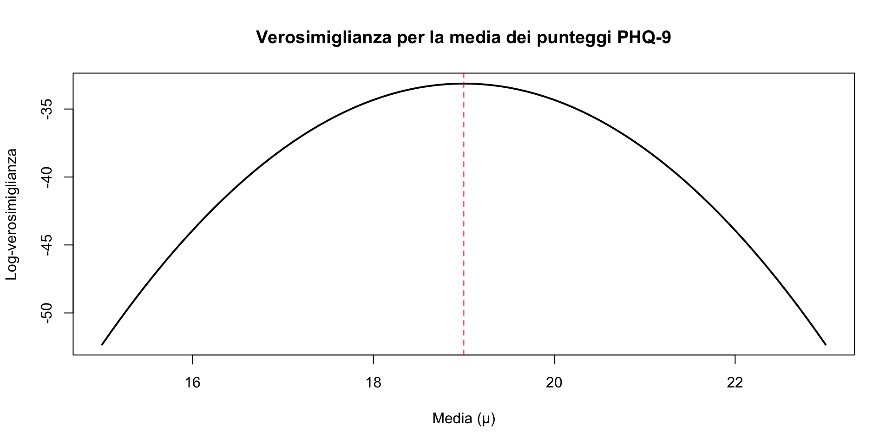
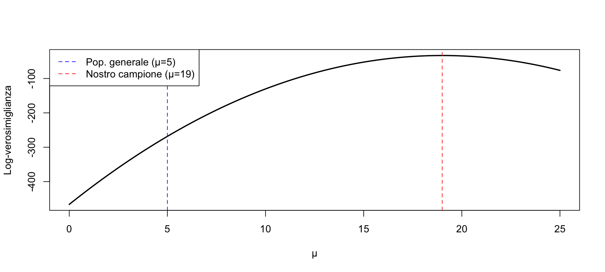
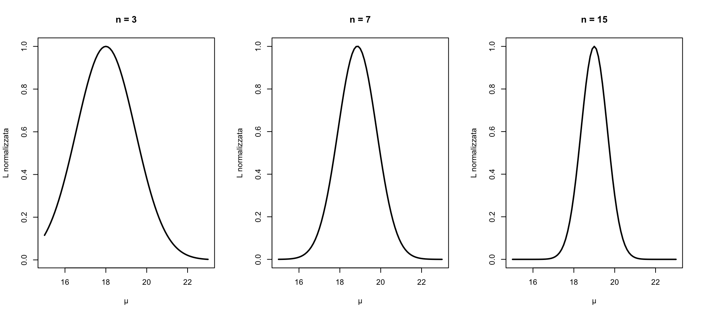
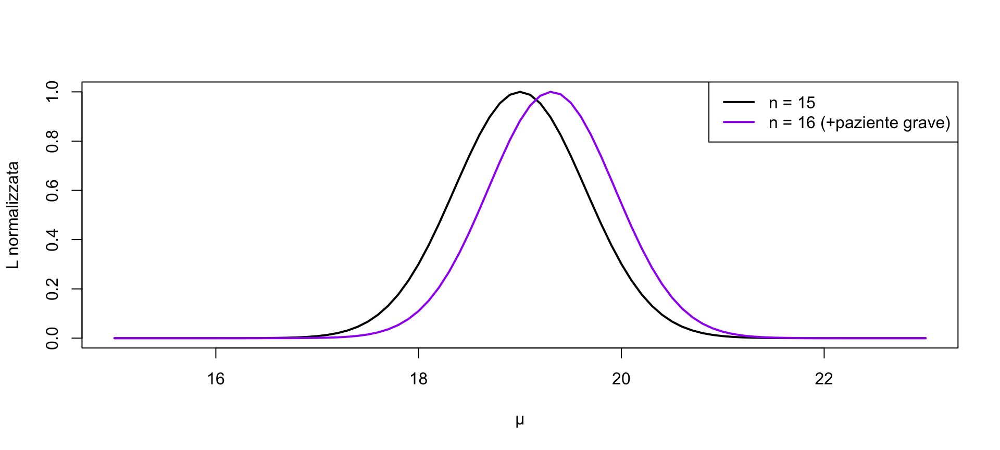
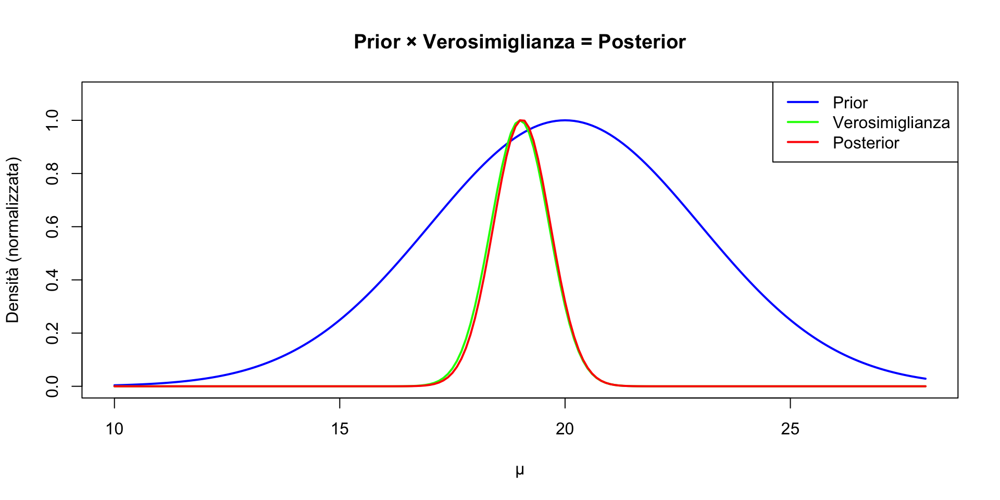
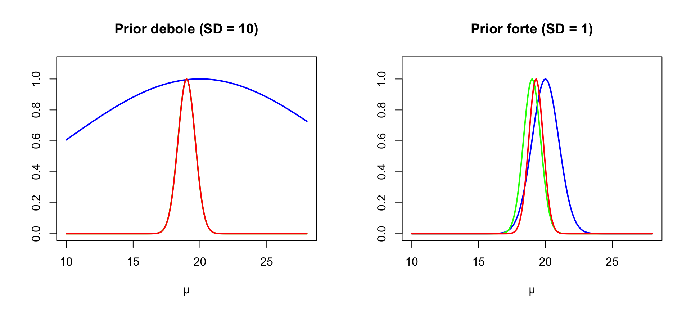
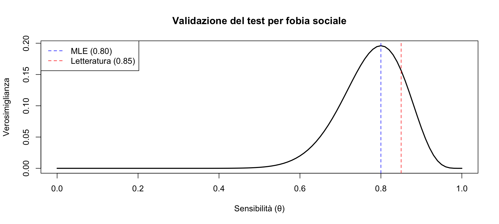
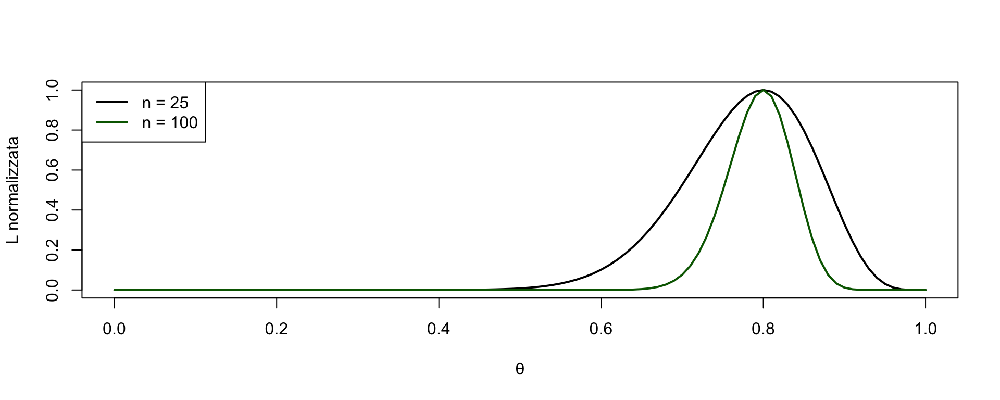

![]()
[1] 19[1] 2.236068Segmento 2 — Dati continui e combinazione di evidenze
29 ottobre 2026
In psicologia usiamo spesso scale che producono punteggi continui:
Come stimiamo i parametri di queste distribuzioni?
Il PHQ-9 misura la severità della depressione (0-27).
Consideriamo un campione di 15 pazienti con depressione maggiore:
Assumiamo che i punteggi seguano una distribuzione normale.
Abbiamo osservato un campione di pazienti con:
Domanda chiave:
qual è la vera media \(\mu\) della popolazione da cui provengono questi pazienti?
E soprattutto:
qual è il grado di incertezza della nostra stima?
Valori diversi di \(\mu\) sono più o meno compatibili con i dati osservati.
La verosimiglianza ci dice:
quanto è plausibile un certo valore di \(\mu\) con i dati del campione osservato.
Assumiamo che la deviazione standard della popolazione sia nota (ad esempio dalla letteratura):
\[ \sigma = 2.5. \]
La verosimiglianza della media \(\mu\) è:
\[ \mathcal{L}(\mu) = \prod_{i=1}^{n} \frac{1}{\sqrt{2\pi}\sigma} \exp\!\left(-\frac{(x_i - \mu)^2}{2\sigma^2}\right). \]
È il prodotto delle probabilità di osservare tutti i dati, dato \(\mu\).
Massimizzare la verosimiglianza ⇔ massimizzare la log-verosimiglianza.
Invece di risolvere formule complicate, facciamo così:
Stiamo dicendo:
“proviamo valori di \(\mu\) da 15 a 23, a piccoli passi”.
Questa funzione:
Ora abbiamo una log-verosimiglianza per ogni valore di \(\mu\).
dnorm(..., log = TRUE): calcola la probabilità (su scala logaritmica) di ogni datosum(): combina tutte le osservazionisapply(): ripete automaticamente il calcolo per tutti i valori di \(\mu\)Il risultato è una curva di verosimiglianza per la media.
La verosimiglianza non ci dà la risposta, ma ci mostra quali valori di \(\mu\) sono più compatibili con i dati e quanto siamo incerti della stima.

Nella popolazione generale, il punteggio medio al PHQ-9 è circa 5.
Il nostro campione clinico ha media 19.
Compito: verifica visivamente che \(\mu = 5\) è implausibile alla luce dei dati che abbiamo osservato (pazienti).
mu_ampia <- seq(0, 25, by = 0.1)
loglik_ampia <- sapply(mu_ampia, calcola_loglik, dati = punteggi, sigma = sigma_noto)
plot(mu_ampia, loglik_ampia, type = "l", lwd = 2,
xlab = "μ", ylab = "Log-verosimiglianza")
abline(v = 5, col = "blue", lty = 2) # Popolazione generale
abline(v = 19, col = "red", lty = 2) # Nostro campione
legend("topleft", c("Pop. generale (μ=5)", "Nostro campione (μ=19)"),
col = c("blue", "red"), lty = 2)
La log-verosimiglianza per \(\mu = 5\) è molto più bassa (quasi -150 punti!) rispetto alla log-verosimiglianza associata a \(\mu = 19\).
Questo conferma quantitativamente ciò che sapevamo: i pazienti con depressione hanno punteggi PHQ-9 molto più alti della popolazione generale.
Supponiamo di osservare \(n\) individui diversi, ciascuno con una propria osservazione:
Assumendo che le osservazioni siano indipendenti, la verosimiglianza totale è il prodotto delle verosimiglianze individuali:
\[ \mathcal{L}(\theta \mid y_1, y_2, \ldots, y_n) = \mathcal{L}(\theta \mid y_1), \mathcal{L}(\theta \mid y_2), \cdots \mathcal{L}(\theta \mid y_n). \]
L’indice \(i\) non indica ripetizioni della stessa persona, ma:
osservazioni provenienti da individui diversi, ciascuno estratto dalla stessa popolazione.
È proprio questa assunzione che giustifica il prodotto.
Per comodità di calcolo, lavoriamo con il logaritmo:
\[ \ell(\theta) = \log \mathcal{L}(\theta) = \ell_1(\theta) + \ell_2(\theta) + \cdots + \ell_n(\theta), \] dove ogni termine \(\ell_i(\theta)\) rappresenta:
il contributo del singolo individuo \(i\) alla verosimiglianza totale.
Ogni individuo fornisce un piccolo pezzo di informazione su \(\theta\). La verosimiglianza totale è la somma di tutti questi contributi.
Immagina di raccogliere i dati un paziente alla volta.
Come cambia la nostra stima man mano che arrivano nuovi dati?
# Prendiamo i pazienti 3, 7, 15
par(mfrow = c(1, 3))
for (n_paz in c(3, 7, 15)) {
dati_parziali <- punteggi[1:n_paz]
loglik_parz <- sapply(mu_griglia, calcola_loglik,
dati = dati_parziali, sigma = sigma_noto)
# Normalizziamo per visualizzare meglio
lik_norm <- exp(loglik_parz - max(loglik_parz))
plot(mu_griglia, lik_norm, type = "l", lwd = 2,
main = paste("n =", n_paz), xlab = "μ", ylab = "L normalizzata")
}
L’informazione si accumula con ogni nuova osservazione.
Arriva un 16° paziente con punteggio PHQ-9 = 24 (molto alto).
Compito: come cambia la verosimiglianza?
# Dati originali vs dati + nuovo paziente
punteggi_nuovi <- c(punteggi, 24)
loglik_orig <- sapply(mu_griglia, calcola_loglik, dati = punteggi, sigma = sigma_noto)
loglik_nuovi <- sapply(mu_griglia, calcola_loglik, dati = punteggi_nuovi, sigma = sigma_noto)
lik_orig <- exp(loglik_orig - max(loglik_orig))
lik_nuovi <- exp(loglik_nuovi - max(loglik_nuovi))
plot(mu_griglia, lik_orig, type = "l", lwd = 2,
xlab = "μ", ylab = "L normalizzata")
lines(mu_griglia, lik_nuovi, col = "purple", lwd = 2)
legend("topright", c("n = 15", "n = 16 (+paziente grave)"),
col = c("black", "purple"), lwd = 2)
Il nuovo paziente “estremo”:
Questo è un comportamento desiderabile: i dati precedenti “stabilizzano” la stima.
\[ P(\theta \mid \text{dati}) \propto P(\text{dati} \mid \theta) \times P(\theta) \]
Ovvero:
\[ \text{Posterior} \propto \text{Verosimiglianza} \times \text{Prior} \]
Il prior rappresenta ciò che sapevamo prima di vedere i dati.
La verosimiglianza è ciò che i dati ci dicono.
Il posterior combina le due fonti di informazione.
Dalla letteratura sappiamo che i pazienti con depressione maggiore hanno tipicamente punteggi PHQ-9 tra 15 e 25.
Possiamo codificare questa conoscenza come un prior:
\[ \mu \sim \text{Normale}(20, 3) \]

Il posterior è più vicino alla verosimiglianza perché i dati sono informativi.
Cosa succede se il prior è:

Prior debole: Il posterior è quasi identico alla verosimiglianza. I dati “dominano”.
Prior forte: Il posterior è un compromesso. Il prior “resiste” ai dati.
Nella pratica, di solito usiamo prior moderatamente informativi.
Stai validando una nuova versione breve di un questionario sull’ansia sociale.
Studio pilota:
Dalla letteratura:
plot(theta, verosim, type = "l", lwd = 2,
xlab = "Sensibilità (θ)", ylab = "Verosimiglianza",
main = "Validazione del test per fobia sociale")
abline(v = 0.80, col = "blue", lty = 2) # Nostra stima
abline(v = 0.85, col = "red", lty = 2) # Letteratura
legend("topleft", c("MLE (0.80)", "Letteratura (0.85)"),
col = c("blue", "red"), lty = 2)
[1] 1.253473Il valore 0.80 è circa 1.4 volte più verosimile di 0.85, ma 0.85 è ancora ragionevolmente plausibile.
# Confronto: n = 25 vs n = 100 (stessa proporzione)
verosim_25 <- dbinom(20, 25, prob = theta)
verosim_100 <- dbinom(80, 100, prob = theta)
plot(theta, verosim_25/max(verosim_25), type = "l", lwd = 2,
xlab = "θ", ylab = "L normalizzata")
lines(theta, verosim_100/max(verosim_100), col = "darkgreen", lwd = 2)
legend("topleft", c("n = 25", "n = 100"), col = c("black", "darkgreen"), lwd = 2)
Con 100 pazienti, l’incertezza si riduce notevolmente.
La verosimiglianza funziona anche per dati continui (usando dnorm())
Con osservazioni indipendenti, le log-verosimiglianze si sommano
Più dati raccogliamo, più la curva diventa stretta
La verosimiglianza è il ponte verso l’inferenza bayesiana
Nell’analisi bayesiana: Posterior ∝ Prior × Verosimiglianza
| Operazione | Codice R |
|---|---|
| Verosimiglianza binomiale | dbinom(y, n, prob = theta) |
| Verosimiglianza normale | dnorm(x, mean = mu, sd = sigma) |
| Log-verosimiglianza | ..., log = TRUE |
| Sommare contributi | sum(dnorm(..., log = TRUE)) |
| Trovare MLE | theta[which.max(loglik)] |
La verosimiglianza è lo strumento che ti permette di dire:
“Dati i risultati del mio studio, ecco quanto sono plausibili diversi valori del parametro che mi interessa.”
Questa è la base di ogni inferenza statistica moderna.
Materiale: https://ccaudek.github.io/utet-prob/
Prossimo argomento:
Prior, verosimiglianza e posterior: l’architettura completa dell’inferenza bayesiana.